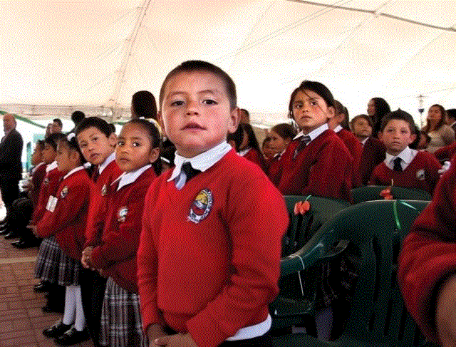

PRINCIPIOS
- La autonomía le facilita a los estudiantes la toma de decisiones asumiendo las consecuencias de sus actos además, reconociendo las normas sociales y morales.
- El sentido de pertenencia que faculta a los estudiantes para apropiarse de la defensa y respeto de la identidad institucional.
- La comunicación como proceso fundamental en los estudiantes que les facilita exponer las ideas de manera argumentada y proactiva.
- La creatividad permite desarrollar en los estudiantes sensibilidad por su entorno canalizando sentimientos a través de las diferentes expresiones dando origen a la generación de nuevas ideas.
- La pertinencia permitirá a los estudiantes ser útiles y oportunos teniendo en cuenta los saberes previos que se convaliden en el entorno cultural, educativo, familiar y religioso.
VALORES
- Respeto:valor fundamental para la interacción del ser humano con su entorno.
- Responsabilidad:Como la virtud que tiene una persona no sólo de tomar una serie de decisiones de manera consciente sino también de asumir las consecuencias que tengan las citadas decisiones y de responder de las mismas ante quien corresponda en un momento.
- Honestidad:Valor moral fundamental para entablar relaciones interpersonales basadas en la confianza, la sinceridad y el respeto mutuos. Desde un punto de vista filosófico es una cualidad humana que consiste en actuar de acuerdo como se piensa y se siente.
FILOSOFIA Y ETICA
La IEM Manuela Ayala de Gaitán, tiene como Filosofía considerar al ser humano como personaintegral, cuya realidad se ve enmarcada en la relación con su entorno, actitud y transformación del medio en el cual se desempeña